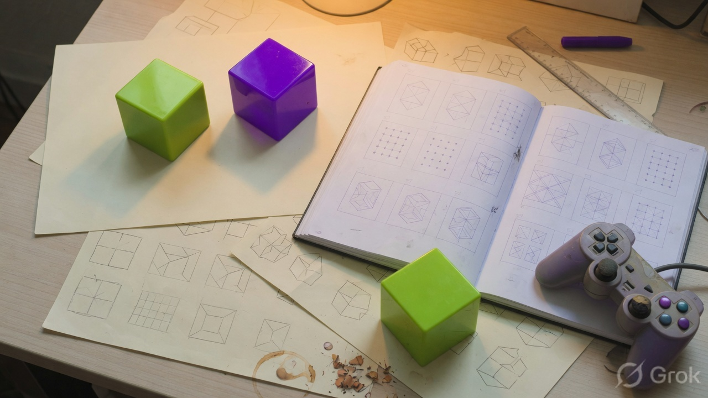
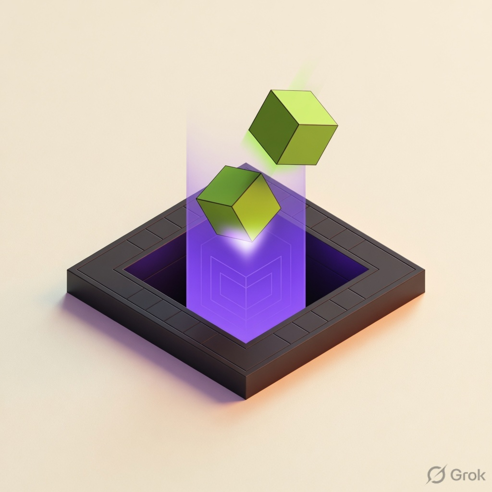

Northwell Studio
We are a handful of people who kept seeing cubes in dishwashers. Dropwell is the game we wanted on a Tuesday night: honest gravity, a clean well, no licensed mascot.
Studio notesAn original puzzle from a small studio that likes packing more than pageantry.

We are a handful of people who kept seeing cubes in dishwashers. Dropwell is the game we wanted on a Tuesday night: honest gravity, a clean well, no licensed mascot.
Studio notesA falling-block puzzle. Glyphs — seven shapes made of four cubes — drop into a well. You rotate them, slide them, and clear lines. The pleasure is old. The wrapping is new.
We built our own look: lime, violet, a stone shaft, a name that is not someone else’s trademark.


Rotate, shift, and drop glyphs as they fall. Fill a row, it vanishes. Miss the gaps and the stack climbs. Cross the rim and the round ends. Strategy first, then speed.
Play nowNorthwell Studio, 2026. We like pentomino tables, packing problems, and games that teach your hands before they teach your mouth. Dropwell is our first public well.


The leftover urge to rotate a trunk, a shelf, a sink until the empty space is gone. Players call it Afterstack. We did not invent packing. We just named the hangover.
See it outside